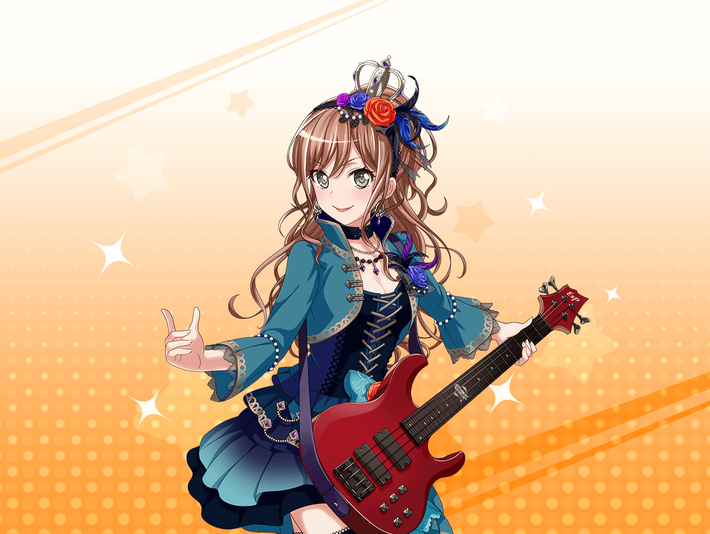

スタジオ
リサ
ん〜！
やっと休憩だぁ！
リサ
あれ？
あそこで何かやってるのは……
リサ
あこ〜！
何やってるの？
あこ
あっ！
リサ姉！
リサ
えっと……どしたの、そのポーズ
あこ
これはね！
新衣装のためのポーズ！
あこ
なんだけど……
今はまだ、考えてる途中なんだ〜
リサ
へぇ～、新衣装の、ポーズねぇ……
あこ
あ、そうだ！
リサ姉も考えるの手伝って！
リサ
アタシ！？ いや〜、アタシ、そういうセンスは
ちょっとないからなあ……
あこ
大丈夫！
あこがポーズを取るから
いんすぷれーしょん？ でいいかを判断して！
リサ
それを言うなら、インスピレーション、でしょ？
決めるのはいいけど……
あこ
ん？
どうしたの、リサ姉？
リサ
まだ衣装がどういうのかも決まってないんだから、
ポーズを考えるのは早いんじゃない？
あこ
うーん……
言われてみればそうかも……
リサ
あこは気が早いからね〜
あこ
そ、そんな事ないよ！
備えあれば失敗なしだよ！
リサ
備えあれば憂いなし、ね？
まぁ、確かにそうかもだけど……
リサ
あっ！
あこは、どういう衣装がいいの？
あこ
えっとね〜、まず、背中に翼が生えててね！
リサ
つ、翼？
あこ
うんっ！
こう……ぶわーっ！ って感じの翼が生えてるの！
リサ
ぶ、ぶわー……？ 想像すると……
なんか……すごいね……？
あこ
えへへ～♪
カッコイイでしょ！
あこ
それでねそれでね！
両肩にトゲトゲがついてるの！
リサ
と、トゲトゲ……？
それって、どんな……？
あこ
こう、３本生えてて
真ん中の１本だけが長いの！
リサ
そ、そうなんだ？
１本だけ長いんだ……
あこ
あとはね〜……そう！
やっぱり色は黒ベースで身体のラインが赤なの！
リサ
へ、へぇ〜……
もう想像を絶するすごさだね
リサ
でも、あこが言う衣装だと……
さすがに演奏できなそうじゃない？
あこ
あ！ そ、そっか！
確かにそうかも……
カッコイイんだけどなぁ
リサ
あはは……
まぁ、カッコイイ……のかな？
あこ
でもでも
じゃあ、どういうのがいいんだろう？
リサ
そうだなぁ……
具体的にはないけど……
あこ
あこ、あんまりファッション雑誌とか見ないからな……
リサ
じゃあさ！
今日の練習終わりに一緒にお店に行ってみよっか？
あこ
リサ姉と一緒にっ！？
リサ
もっちろん！
お店に行って参考になりそうな服を探してみようよ☆
あこ
面白そうっ！
あこ、リサ姉と一緒にお店に行きたいっ！
リサ
じゃあ、練習が終わったら一緒に行こう！
あこ
うんっ！
約束だよっ！！
リサ
あはは、約束、約束♪